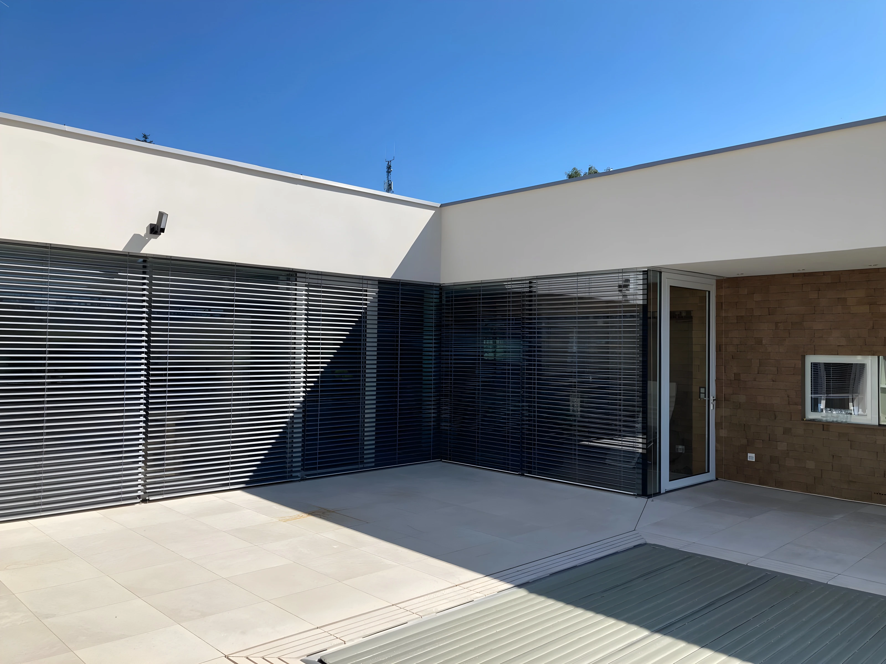

StarkFix Austria
Fix for you
Fix for you
A StarkFix egy Ausztriában működő árnyékolástechnikai cég. Fő célunk, hogy otthonát vagy munkahelyét kényelmesebbé, energiatakarékosabbá és esztétikusabbá tegyük modern árnyékoló rendszereinkkel. Szakértelmünk és precizitásunk garantálja a minőséget minden projektben.

Modern, energiatakarékos redőnyök felszerelése és javítása családi házakban és irodákban.

Kültéri és beltéri napellenzők tervezése, kivitelezése, javítása, automatizálása.

Praktikus, tartós szúnyoghálók ablakokra és ajtókra, egyedi méretben is.
Zsalúziák felszerelése a Linz-i kikitő egyik épületére.
Sodronyos vezetésű zsaluzia speciális átalakítással, Felső-Ausztriában.
Téli kert árnyékolás szerelése Felső-Ausztriában.
Email: info@starkfixaustria.at
Telefon: +43 699 18391466
Cím: 4030 Linz, Denkstraße 29/6
Kérdés esetén keressen minket bizalommal!